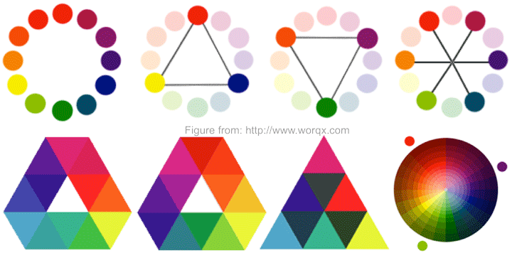
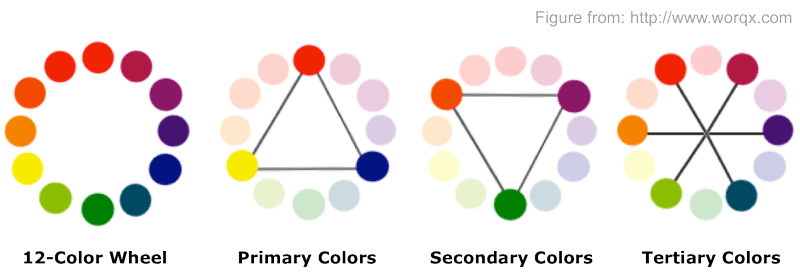
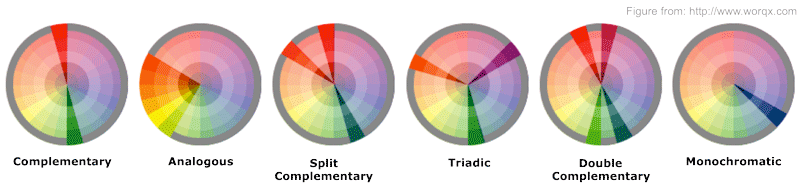
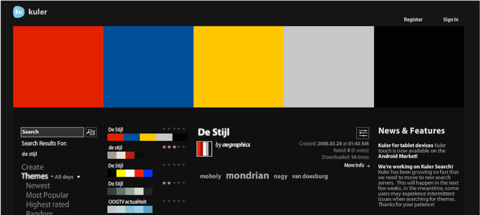
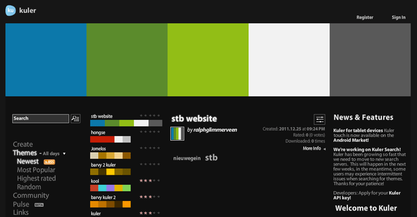
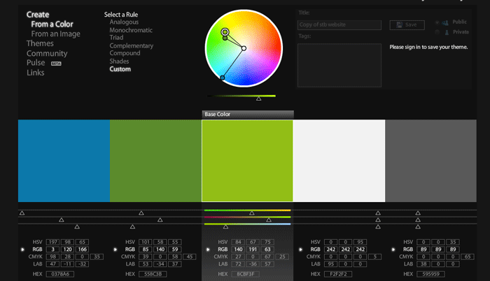
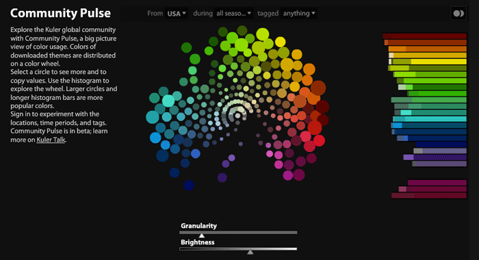
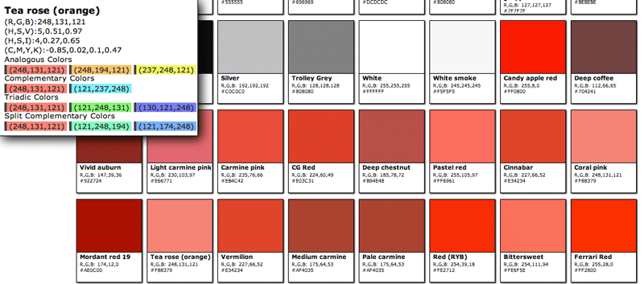

Similar to landslide
Color is just light of different wavelength in a physical sense, but it has great impact on how you feel what you see. This chapter introduces the basic theory of color, including a brief history of color research, color model, properties of color, combination of colors, and references.
Kuler is a service from Adobe ®, and you can easily explore, create and share a theme. If you have no idea about how to get your color system, don'y worry and try it out.
Pantone ® is fabulous. I like its way of showing colors, so I crawled list of colors from wikipedia, and present all these colors in a way similar to Pantone ® label. Here is the demo.

Nevertheless, there has been a long history of research studies on color shown below.
Therefore, HSV color model is often used in design community.
However, in computer science, RGB model is quite popular, which quantifies the response of Red, Green, Blue sensors when light ray hits. One byte is usually used to store the value of response of one sensor, so color can be represented in the hexadecimal format #RRGGBB, e.g., Red is represented as #FF0000, and Yellow is #FFFF00.
The following chart shows how color change as hue, saturation, brightness/value, red, green, blue increases respectively.
Introduced by Isaac Newton (1642-1727), color wheel is a powerful tool to describe the relationship between difference colors. 12-Step Color Wheel below shows basic colors pairs, Primary Colors, Secondary Colors, Tertiary Colors.



Kuler is a powerful tool for exploring, creating, sharing color themes. It is provided by Adobe and compatible with Adobe Creative Suite 2, 3, 4 & 5. It includes,
It's handy. You can search a color theme by keywords, view the theme by click the button shown in the following image.

Normally, the number of colors is less than 5. Kuler provides a convenient UI for editing the colors. You can set a base color to apply rules for new theme. Manipulate the RGB, CMYK, HSV, LAB value directly and the hexadecimal value is updated instantly.

According to the help of kuler, colors are grouped on the wheel in clusters (circles). Each cluster represents one or more colors, depending on the granularity of the view. Larger clusters roughly correspond to more usage (more downloads of themes with that color). Cluster sizes are approximate and are not meant to represent exact values or precise comparisons between sizes and download counts. The focus of Community Pulse is general patterns of color usage, not individual colors and values.

Kuler also provides API for web developers,
More is on its developer website.
If you wanna create the color theme for your own, go to its website.

I filtered the data using python from the single page of wikipedia. The bot script should follow the policy of wikipedia.
Then dumped into json for potential use. The format of an entry is shown below,
1 {
2 "color_g": "138",
3 "color_name": "Air Force blue",
4 "color_r": "93",
5 "color_hex": "#5D8AA8",
6 "color_b": "168"
7 }
The next step is to show it in browser. I choose django template to render it, as the number of colors is very large.
The code for template is shown below,
1 {% for color in colors %}
2 <div class="color_card" style="background-color:{{color.color_hex}}">
3 <div class="color_info">
4 <h3 class='color_name'>{{ color.color_name }}</h3>
5 <h4 class='color_rgb'>R,G,B: {{ color.color_r }},{{ color.color_g }},{{ color.color_b }}</h4>
6 <h4 class='color_hex'>{{ color.color_hex}}</h4>
7 </div>
8 </div>
9 {% endfor %}
| Table of Contents | t |
|---|---|
| Exposé | ESC |
| Full screen slides | e |
| Presenter View | p |
| Source Files | s |
| Slide Numbers | n |
| Toggle screen blanking | b |
| Show/hide slide context | c |
| Notes | 2 |
| Help | h |